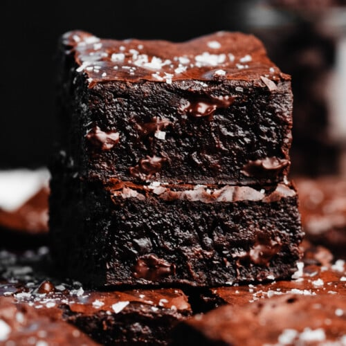

Fudge Brownies
Home

Fudge Brownies
If you're in the mood for a delicious chocolatey treat, give this simple brownie recipe a try.
Ingredients
- 1 cup butter
- 2 cups sugar
- 4 eggs
- 2 teaspoons vanilla
- 2/3 cup cocoa powder
- 1 cup flour
- 1/2 teaspoon salt
- 1/2 teaspoon baking powder
- 1 cup chocolate chips
Directions
- Preheat the oven to 350 degrees Fahrenheit.
- Grease a 9x13 baking pan.
- Melt the butter and stir in sugar, eggs, and vanilla.
- Stir in cocoa powder, flour, salt, and baking powder.
- Add in the chocolate chips and pour the batter into the baking dish.
- Bake for 25 to 30 minutes and enjoy!